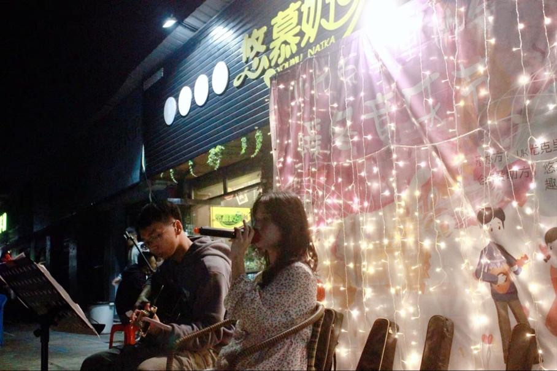

社团简介 | 活动安排 | 风采展示 | 社员故事 | 在线报名
(一)、社团起源与理念 尤克里里，以其小巧便携的体型、明亮欢快的音色和简单易学的特点，自20世纪初从夏威夷群岛走向世界，迅速成为全球音乐爱好者心中的“快乐使者”。 本社团正是在这样的文化背景下应运而生，旨在通过尤克里里的演奏与教学，激发成员对音乐的兴趣，培养团队协作能力，同时传递积极向上的生活态度。 我们相信，音乐是心灵的慰藉，是跨越语言和文化的通用语言，而尤克里里则是这语言中最温柔、最灵动的音符。
(二)、社团构成与活动 1. 成员构成: 社团成员来自不同年级、不同专业，他们或是音乐初学者，怀揣着对尤克里里的好奇与热爱；或是已有一定基础的演奏者，渴望在更广阔的舞台上展现自我。 无论水平高低，大家都因对音乐的共同追求而相聚一堂，形成了一个温馨、包容、充满活力的大家庭。 2. 常规活动： 基础教学：每周定期举办尤克里里基础课程，由经验丰富的社员或外聘专业教师授课，从持琴姿势、基本和弦到简单曲目演奏，循序渐进地引导新成员入门。 进阶工作坊：针对有一定基础的成员，开设进阶技巧工作坊，如指弹技巧、编曲创作、即兴演奏等，鼓励成员探索尤克里里的无限可能。 主题音乐会：定期举办或参与校内外音乐会，如“夏威夷之夜”“四季旋律”等主题演出，通过独奏、合奏、伴奏等多种形式，展现尤克里里的多样魅力。 文化交流：与其他音乐社团、艺术团体进行交流合作，参与跨校音乐节、文化节等活动，拓宽视野，增进友谊。
(三)、特色项目与创新实践 1. 原创音乐创作 鼓励成员结合个人经历、情感体验进行原创音乐创作，将尤克里里的独特音色融入现代音乐元素，创作出既具传统韵味又不失时代感的作品。社团内部设立“原创音乐奖”，激励成员勇于创新，表达真我。 2. 公益音乐行动 积极响应社会公益事业，组织“音乐进社区”“音乐疗愈”等活动，用尤克里里的温暖旋律为老年人、儿童、残障人士等群体带去欢乐与慰藉，展现音乐的社会价值与人文关怀。 3. 数字化传播 利用社交媒体、视频平台等现代传播手段，录制并分享尤克里里教学视频、演奏片段、原创作品等，扩大社团影响力，吸引更多音乐爱好者加入我们的行列。
(四)、社团文化与精神 尤克里里社团不仅仅是一个音乐学习的场所，更是一个充满爱与梦想的大家庭。 在这里，每个人都能找到属于自己的声音，用音乐讲述故事，用旋律传递情感。 我们倡导“快乐音乐，共享成长”的理念，鼓励成员在相互学习中共同进步，在舞台上绽放光彩，在生活中保持乐观向上的心态。 随着岁月的流转，尤克里里社团已成长为一棵枝繁叶茂的大树，它的根系深深扎入校园文化的土壤，枝叶则伸展向更广阔的天空。 未来，我们将继续秉承初心，用尤克里里的美妙旋律，编织更多关于青春、梦想与爱的故事，让这份来自夏威夷的热带风情，在更多人的心中生根发芽，绽放出最灿烂的花朵。
为了让大家更好地了解尤克里里社的日常，本学期计划安排如下几项主要活动。 具体时间可能会根据学校统一安排略作调整，详情请关注社团通知。
| 尤克里里社 2025 年春季学期活动安排表 | |||
|---|---|---|---|
| 活动名称 | 活动时间 | 活动地点 | 负责人 |
| 零基础入门班 | 每周三 18:30-20:00 | 学生活动中心 音乐教室 205 | 路人甲 |
| 指弹技巧提升班 | 每周五 19:00-20:30 | 路人乙 | |
| 三月主题快闪 | 3月15日 12:00-12:30 | 食堂门口广场 | 路人丙 |
| 「弦动春日」期末音乐会 | 5月30日 18:30-20:30 | 大学生活动中心 大礼堂 | 路人丁 |
上表仅列出了部分代表性活动，日常还会有小型即兴合奏、经验分享等活动， 欢迎有想法、有创意的同学参与策划。
下面是一张往届校园音乐会的照片示意。点击图片，可以查看更详细的活动介绍页面。
图中为上学期“夏日之声”校园音乐会上，尤克里里社成员的演出场景。 平时的训练与排练，都会在正式演出中得到充分的展示机会。
下面示例演示如何在页面中嵌入一段吉他社宣传视频。 如果暂时没有真实的视频文件，可以先保留代码结构，待以后再替换为真实文件路径。
清晨七点，当第一缕阳光穿透梧桐树叶，洒在音乐楼三楼的落地窗前，尤克里里社的晨练小队已经开始了新一天的旋律之旅。 大二的陈阳总是第一个到达，他会仔细擦拭社团的十把公用琴，调整琴弦的松紧度，然后坐在窗边的蒲团上，弹奏起《Over the Rainbow》。 这首曲子是社团的"晨钟"，当清脆的琴音在走廊回荡，其他成员便会陆续到来。 "阳哥，今天教我们扫弦技巧吧！"大一新生林小雨抱着印有夏威夷花朵的琴包跑进来，马尾辫随着步伐跳动。 她是社团最勤奋的新人，入学三个月已经学会了二十首弹唱曲目。每周三的晨练是她最期待的时光，因为这是社团唯一没有固定课程的自由练习时间。 陈阳笑着点头，从琴架取下自己的相思木琴："先做手指热身操，记得我们上个月学的'蜘蛛爬弦'吗？"六七个晨练成员围坐成半圆，指尖在琴弦上灵活舞动，阳光透过玻璃窗，在琴身上投下斑驳的光影。
五月的傍晚，当夕阳将云朵染成蜜桃色，社团的"流动舞台小分队"会准时出现在情人湖边的大草坪上。这是他们最自由的表演时刻，没有节目单，没有主持人，只有随性而至的旋律。 今晚的焦点是大一新生组合"四弦奇迹"。四个女孩穿着同款碎花长裙，弹唱着改编版的《稻香》。 主唱林小雨的声音清澈如水："多少人为生命在努力勇敢地走下去..."围观的同学轻声跟唱，手机闪光灯像散落的星星。曲终时，掌声惊飞了树梢的夜鹭。 "接下来是自由点歌时间！"陈阳抱着琴走到人群中央，"想听什么？"一个戴眼镜的男生举手："能弹《情非得已》吗？我想给女朋友唱。" 当熟悉的旋律响起，女生惊喜地捂住嘴，周围响起善意的起哄声。三把尤克里里默契地伴奏，晚风轻拂过琴弦，把歌声送向粼粼湖面。 夜幕降临时，二十多个社员围坐成圈，开始即兴合奏。没有乐谱，没有指挥，只有眼神的交流。 王弦音弹出《卡农》的主题旋律，李乐加入低音伴奏，张雅琪即兴哼唱和声，新社员们则用沙锤和箱鼓打出节奏。不同声部如溪流汇入江河，在暮色中流淌成温暖的乐章。
六月的雨季，当暴雨敲打着活动室的玻璃窗，社团的创作小分队却迎来了最富诗意的时光。这是他们每月一次的"灵感夜"，桌上堆满零食和手稿，白板上画着五线谱和潦草的和弦图。 "这个副歌需要更强烈的情绪转折。"李乐在电子琴上弹出几个音符，"试试把C调转到E小调？"角落里的陈阳突然拍手："我想到了！"他抓起尤克里里弹出一段旋律，雨水在窗上划出的痕迹仿佛成了天然的五线谱。 大三的编曲高手吴默正在调试新买的Loop效果器。随着脚踏板的控制，四段不同的音轨逐渐叠加：指弹主旋律、扫弦节奏型、箱鼓节拍，还有张雅琪用雨声模拟器加入的雨滴音效。当所有声部融合时，一首《雨季协奏曲》在雨夜中诞生。 最动人的是林小雨的新作《四弦日记》。她展示着手机里的歌词备忘录："教室窗边的阳光/琴包上未干的雨痕/你教我按弦的指尖温度..." 当她用轻柔的嗓音唱出"这四根弦连起的青春"，活动室里突然安静下来，只听见窗外的雨声和隐约的琴音余韵。
如果你也喜欢音乐，期望在大学生活中拥有一段与吉他相关的美好回忆， 欢迎加入我们，一起在琴弦上演奏青春的旋律。
请认真填写以下信息，确保联系方式准确无误。 提交后，社团会通过电话或短信的方式通知面谈或试音时间。
提交表单后，如需修改信息，可以再次填写并提交最新的一份。
校园吉他社 · 2025 招新示例网页（教学参考用）
本页面仅作为 HTML 基础实验的示例代码。